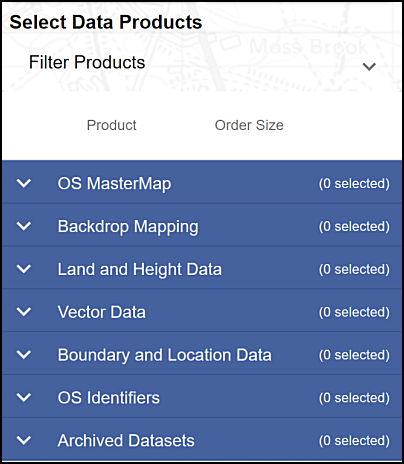

Finding spatial data to use in GIS
The background to finding data will be covered in the lecture segment at the beginning of the class, and the presentation and any other supporting materials will be available in Minerva. The lecture segment should help you to understand why you are doing these exercises. If you still aren’t sure, please ask Clare.
Learning outcomes
When you have completed this section of the workbook you should be able to
- demonstrate that you can find suitable data for GIS projects from a variety of sources
- describe the main types of data used in GIS
- acknowledge the data that you use in your maps in a suitable fashion
Introduction
Being able to find, download and prepare your own data is an essential part of using GIS. While the data will be provided for you for many of the exercises in this module, you will find it useful to have some idea of where the data comes from, and what there is available for you to use for your own maps.
While downloading shouldn’t take too long, don’t leave it until the last minute before you have to produce a map. Websites can become unavailable either permanently or temporarily, or computers can crash.
Digimap
Digimap is a service provided to Higher Education in the U.K. by EDINA at Edinburgh University. Digimap provides a front end to digital maps and data of Great Britain from the Ordnance Survey and British Geological Survey, amongst others. The University of Leeds subscribes to the collections and as a student you have access to maps and data for use as part of your studies.
Logging in to Digimap
If you have not used Digimap before you will need to register and log in using your University ID, that is the username and password that you use to access University systems such as Minerva.
Full instructions for logging in are on the Digimap help pages.
- Go to the Digimap Collections page at https://digimap.edina.ac.uk

- Click the
Log inbutton at the top right of the screen - type
Leedsin the box and selectUniversity of Leedsfrom the list of available institutions - You should get the familiar University of Leeds log in page, so type your University username and password into the appropriate boxes and then click the
Log inbutton. If you are already logged in to Minerva you may find that you don’t have to enter your login details again.
If this is the first time that you’ve logged in to Digimap you’ll be asked to register for each collection separately, though you can do all at one go. You won’t need to use all of the collections during this module, but it’s worth registering for all that are available to you so that you can explore them for yourself. The University does not subscribe to Marine or Global Digimap.
- Go through the list of collections, read and accept the conditions for each one, selecting
Academic Works (coursework, projects, dissertations etc.)in thePurposedropdown for each.
Once you submit all of those you should be taken to the Digimap initial page again, as shown below, but this time you should see your name at top right rather than the log in button.

The list includes options for a large number of collections. In this workbook we’ll only be looking at the collections that are the most relevant for creating the maps you’ll need during your course, but if you are interested in any of the others feel free to explore them. EDINA have worked to make all of the tools similar across each collection, so just have a go!
Browsing maps on screen
Each Digimap collection provides a Roam and a Download interface. The Roam interface allows you to view the data from that collection on a map on screen.
Using Digimap OS Roam
As an example click on
Ordnance Surveyon the menu at the top of the main screenThen select
RoamunderView, annotate & print a mapon the right.Have a go at zooming in and out and exploring the map at different scales.
Try searching for a location in the
Searchbox at the top left.In this module we’ll be making most use of the Download interface, but it’s worth knowing what the Roam interface will do too, so have a quick go with a few of the tools on the left before continuing with the next exercise.

If you want more information about using the Roam interface have a look at the Digimap Resource Centre which is linked from Resources on the main page.
Downloading data from Digimap
Data Download is the tool for downloading data for use in GIS or CAD software. The format that the data is delivered in will determine whether you will be able to open it directly in a software package or whether you will need to convert it.
We’ll be using data from Digimap in QGIS for various exercises in the rest of this module, so you need to know your way around this section. Instructions for converting, importing and viewing file types that need it will be given later in the workbook.
As an example of the download interface we’ll download some Ordnance Survey data.
- Start from the Digimap main page (you can get back to it by clicking on the icon at the top right of the map - hover over to see a tool tip)
- click on
Ordnance Surveyin the menu at the top of the page - from the Ordnance Survey page choose
Data Download

Data Download takes you to a map that looks very similar to Digimap Roam, but with some important differences.
Selecting an area
On the left there is a menu panel with options for selecting an area, with a search box above it.

- Click in the
Searchbox and typeOtley, then pressEnteror click on the magnifying glass to search - When you get the results click on
Otley (Leeds)to zoom in, then close the search results - Under
Drawclick on the rectangle and use the mouse to draw a box around the area shown by an orange box in the image below, clicking to start and finish the box. It doesn’t matter if the box you draw is a bit bigger, but try not to make it any smaller.

Area view
Note that the map you see on the screen only shows the area that you will be downloading data for, not the actual data that you’ll be downloading. You’ll select the data in the next section so don’t worry what it looks like for now.
Selecting data sets
Now that you have selected an area you have to select the data that you need.
- Back in the panel on the left, under
Select Data Products, drop down each of the headings, e.g. Backdrop Mapping, in turn by clicking on the arrow next to them.

- There are a lot of different data sets here and most of them won’t mean anything to you. For now select the following data sets when you find them, by putting a tick in the box next to them.
- Backdrop mapping: VectorMap Local Raster
- Land and Height data: OS Terrain 5 Contours
You can get more information about the data sets by clicking on the arrow next to them. This includes information on licences - which you will need to know later.
The number on the right in brackets under Order Size shows how many tiles your selected area uses out of the maximum downloadable number. If you have chosen a slightly different area to me your number may be different but you should still be well within the limit.
- When you have selected the data you require click on
Add to Basket(Don’t worry, despite the Basket and Checkout you won’t be charged. The University has already paid the subscription.)
Your basket should appear with details of your order.
- Some datasets will give you an option to change the format. In this case click on
Select Formatnext to the OS Terrain 5 Contours. The choices are Shape, GML3 or DWG. ChooseShapein this case. - You may also need to select a theme. For the VectorMap Local Raster there is a choice of themes - pick
Black and whitefor this exercise, though it is worth downloading the others to have a look at them too. - Some items will have a
Clipoption. This means that the data will be sent to you clipped to the area outline that you requested. If you are short of disk space this is very useful as it restricts the amount of data you need to download, but otherwise it doesn’t hurt to have extra data around the outside of your study area. I prefer to untick this box and download full map tiles. - Give the order a name, e.g.
OtleyOS(for Ordnance Survey). This will be part of the file name of the zip file that you download, so try to make it short but helpful! - Click on
Request Download
Downloading your data.
You’ll receive an email confirming your order, then another with a download link. This can sometimes take a while to arrive, depending on how busy the service is.
Make sure that you are still logged in to Digimap before you click on the download link.

Once you have clicked on the link a browser window should open telling you that your order is ready to download.
- Click on
Download - You’ll download a zip file. NOTE: Don’t run or open the file directly from your browser, and make sure that you DON’T save your zip file to a temp folder where you will probably be unable to unzip it.
Warning
Make sure that you remember where you have saved the zip file.
Now open File Explorer (in Windows) and navigate to the location where you saved the zip file.
- Right-click on the compressed map data file that downloaded and choose to
Extract files...- or7-zip > Extract files...if you have 7-zip available. - Select where you want to save the extracted files, and make a note of where you save them to
You should end up with a folder for each dataset that you requested plus text files showing citations and contents. The folders will also have the order number as part of their name.

Viewing your data
In this case the files that you have downloaded are either tiff graphics files or shapefiles.
- Navigate to the data that you downloaded in the file explorer and find the folder called something like
vml-raster_bwr_3612556(your order number will be different). - you’ll also need to go into a folder with the OS grid letters - in this case for Otley it should be
se - Open one of the
.tiffiles by double-clicking on it - the file should open in a graphics program, but that depends what you have set up on your computer. Don’t worry if it doesn’t!
You should be able to see that this is basically a “picture” of a map.
- Try opening one of the
.shpfiles from theterrain-5_3612555folder too. It’s unlikely that you’ll be able to. Just cancel that and don’t try finding software that will open it!
Both folders will contain files that have similar names to the .shp and .tif files, but different file extensions. These won’t open in any programme but are essential for using the data in GIS programs such as QGIS, so make sure that you always keep these files together.
Both of these formats will open in QGIS in the same way that you added data to your map in the Introduction to GIS.
You don’t need to keep the files that you have just downloaded.
Copyright acknowledgements for Digimap data
Copyright is important. Remember that most data providers ask you to sign up to conditions that include an obligation to add a copyright acknowledgement to your map. Check what that copyright statement is and add it.
When you signed up to use the Digimap collections you agreed to add copyright acknowledgements whenever you created a map with the data. The wording does change from time to time so it’s worth knowing how to check it for yourself.
To find these copyright acknowledgements:
- go back to the main Digimap home page
- go to the
Digimap Resource Centre(Resourcesat the top of the main Digimap page) - Look for a link to
Digimap Licence Agreementsunder Popular Resources and click on it - Click on the End User or Sub-licence agreement for the data that you’ve used - in this case the Ordnance Survey Collection
- You may need to download a pdf file rather than see it on a web page - do so and then open the pdf.
- then look for the information under
In return, you must:- that gives you the acknowledgement text.
For example, as of August 2020 when you use Ordnance Survey data obtained from Digimap you are expected to add the following text to your maps.
© Crown copyright and database rights year. Ordnance Survey (100025252).
Where year is replaced by the current year.
To add the copyright symbol - © - to your text
check that the
Num lockis on on the keyboardhold down the
Altkey on the keyboardthen use the number pad to type
0169release the
Altkey
Remember that you do have to acknowledge each different dataset that you use and will have signed up to that when you registered.
If you are not using U.K. Ordnance Survey data this is not the correct copyright acknowledgement to use. For example, if you are using data for Spain or the United States, or indeed UK data that you haven’t downloaded from Digimap. You’ll need to find the correct copyright acknowledgement for yourself.
Advice on citing Digimap data, as opposed to the copyright acknowledgement is given in the Digimap Resource Centre.
The GIS Lounge page on How to cite GIS materials gives some information about citing the software as well as the data. Have a look at that and follow the suggestions to cite non-Digimap data.
Other Digimap collections
In addition to Ordnance Survey Digimap you will also find that you’ll make use of some of the other collections, in particular Geology Digimap and Aerial Digimap. The Roam and Download interfaces work in a very similar way to the Ordnance Survey collection so you should find that you already know how to use them. You’ll be downloading BGS data from Digimap and adding it to your map of the Llanbedr area later in the course.
You have access to all of these collections so feel free to have a look at what is available and make use of any of the data or maps in your work.
Exploring other Digimap collections
Go into the
Historic DigimapCollection and useHistoric Roamto look up either your house or the University using old maps. Try the2 upview to see how you can compare old and new mapping of the same area.
Digimap Collections online help
Digimap help is available from each of the collection pages. Click on the links in the left-hand menu for more information about how to use the services and file formats.
Alternatively use the Help links from within Roam or Download or use the videos that EDINA have uploaded to YouTube
If you want more detailed information EDINA provide e-learning units which are linked from the main Digimap home page.
Data from the web
EDINA Digimap provides a wide range of useful data covering the UK, but you are also likely to need data from outwith the UK, or UK data that isn’t provided by Digimap. It isn’t possible to cover everything in this session, but I will show you one particular source which you should find useful.
Natural Earth Data
Natural Earth is a free, public domain dataset consisting of raster and vector data that will allow you to make maps at general scales. If you want a map of the World, or a general map of a particular country, this is a good starting point.
- Start by going to Natural Earth in your browser

The front page gives an overview of the principles behind the data and an idea of the scales at which it is available. You can find more information under the Features tab, including the file formats and the coordinate system - both important for using the data within GIS.
Natural Earth data
Go to the
Featurespage and make a note of the file types of both the raster and vector data provided by Natural Earth and of the coordinate system that the data comes in.
To download data either
- Click the
Get the Datagreen button on the front page - or click on the
Downloadstab at the top of the site - Choose the scale that you want to download and the type of data that you want, e.g. cultural, physical or raster
For this exercise download the following data:
-
Medium scale data, 1:50m > Cultural > Admin 0 - Countries- click on theDownload countriesbutton to download a zip file. Make a note of where this file is saved to on your disk. -
Medium scale data, 1:50m > Raster > Natural Earth 1- click theDownload small sizebutton underNatural Earth 1 with Shaded Relief and Water. Again, make a note of where the zip file is saved.
Keep these data layers for later exercises. If you are working on a University computer you will need to make sure that the files are within your own disk space, either on your M: drive, or a USB drive. If you are working on the VWD make sure that you save the data to your network (M:/ drive).
Have a look at the summary of the data on the Features page. If you wish try downloading other datasets. You can try adding them to a blank map in QGIS in the same way that you added data in the Introduction to GIS.
Natural Earth data copyright
Finding and acknowledging the copyright of data is very important.
- Return to the Natural Earth front page
- Look at the text in the box next to the
Get the Databutton. One of the links there is to theTerms of Usepage. Click on that now.
Acknowledging Natural Earth data
Read the Terms of Use of Natural Earth data
How should you acknowledge the Natural Earth data if you use it in one of your maps?
The terms of use do say that “Crediting the authors is unnecessary”, however, it is still a good idea to add the data acknowledgement to your map to avoid any possibility of plagiarism. You can choose whether to use the short or long text listed on the page. Adding the url of the data can also be a very good idea.
Finding other data online
These are just a few examples of finding useful data for GIS. Through out the rest of the workbook you’ll be downloading your own data from Digimap. If you need data from elsewhere I’ll either give full instructions or provide the data for you, but tell you where I got it from.
If you are looking for data for a particular project it is well worth searching online using your favourite search engine (e.g. Google). Put the words “gis” and “data” into your searches and it should help you to find relevant data.
I have put together a short list of possible data sources which you are welcome to use to find data and maps.